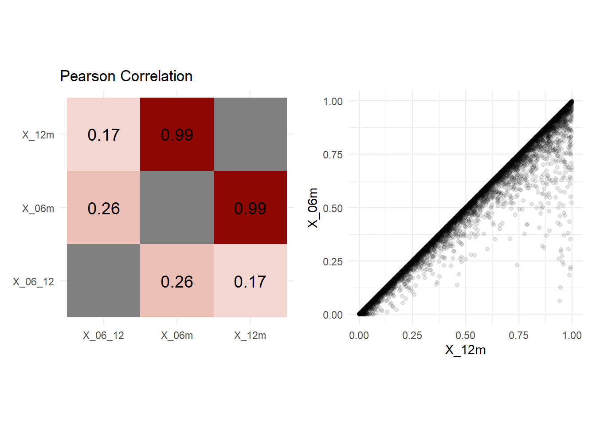
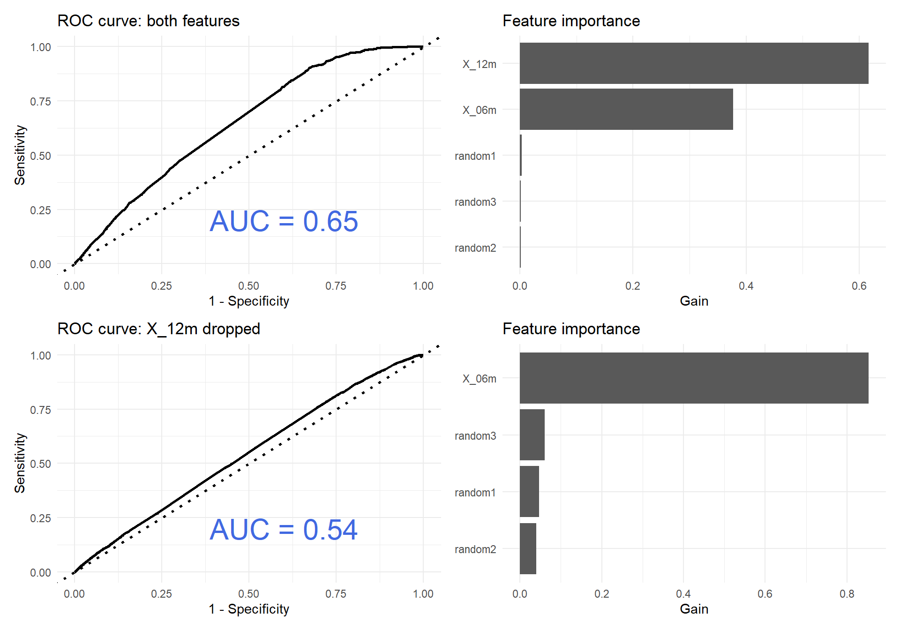
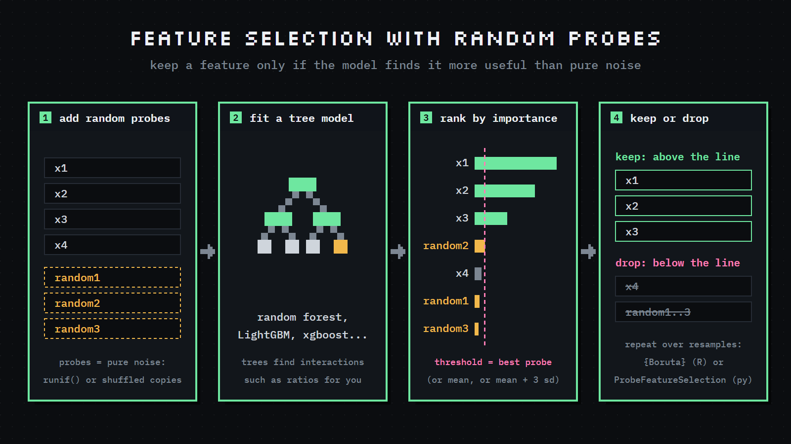

library(tidymodels)
library(tidyverse)
library(bonsai)
library(lightgbm)
library(patchwork)
library(corrr)
theme_set(theme_minimal())
f <- glue::glue
add_dummy_feats <- function(df, n_new_feats) {
n <- nrow(df)
dummy_feats = replicate(n_new_feats, runif(n)) %>%
as_tibble() %>%
set_names(f("random{1:n_new_feats}"))
df %>% bind_cols(dummy_feats)
}Dropping highly correlated features can throw away the signal
machine learning
feature selection
lightgbm
tidymodels
r
A LightGBM simulation where two features with correlation 0.99 carry the signal together, and removing one of them drops the AUROC from about 0.65 to 0.54.
I’ve filtered out one feature of every pair with \(\text{cor}(X_i, X_k) > 0.97\) for most of my career. The reasoning: if two features are almost the same, keeping both adds nothing.
A while ago I posted on LinkedIn a simulation where that rule fails. When the signal lives in a ratio or a difference of two features, \(X_1/X_2\) or \(X_1 - X_2\), both features matter, even with \(\text{cor}(X_1, X_2) = 0.99\). This post walks through the simulation code.
TipSpoiler
Avoid using linear correlation for feature selection. Use the random feature strategy instead: compare each feature’s importance to the importance of features that are pure noise. More details down below.
The data
Think of X_12m as some quantity measured over the last 12 months, and X_06m as the same quantity over the last 6 months. X_06m is X_12m minus a small random amount, so the two are almost identical. The target depends only on their ratio, X_06_12 = X_06m/X_12m. Three pure-noise features complete the data.
set.seed(123)
n = 100000
data <- tibble(
X_12m = runif(n),
X_06m = X_12m - pmin(X_12m, rgamma(n, 0.2, 55 - (X_12m + 1)*26)),
X_06_12 = X_06m/X_12m,
target = rbinom(n, 1, prob = 1/(1 + exp(-1 * (-60 + 60*X_06_12)))),
) %>% mutate(
target = as.factor(if_else(target == 1, "a_1", "b_0"))
) %>%
add_dummy_feats(3)
data %>%
count(target) %>%
mutate(p = scales::percent(n/sum(n)))
## # A tibble: 2 × 3
## target n p
## <fct> <int> <chr>
## 1 a_1 32522 33%
## 2 b_0 67478 67%cor_feats <- data %>%
sample_frac(0.1) %>%
select(starts_with("X")) %>%
correlate() %>%
stretch() %>%
ggplot(aes(x = x, y = y)) +
geom_tile(aes(fill = r), show.legend = FALSE) +
geom_text(aes(label = round(r,2)), size = 5) +
scale_fill_gradient2(low = "royalblue", high = "darkred", mid = "white",
midpoint = 0, limit = c(-1, 1)) +
coord_fixed() +
labs(title = "Pearson Correlation", x = NULL, y = NULL)
X_06m_X_12m <- data %>%
sample_frac(0.1) %>%
ggplot(aes(x = X_12m, y = X_06m)) +
geom_point(alpha = 0.1)
cor_feats + X_06m_X_12m
X_06m and X_12m are the textbook case for the correlation filter. The ratio X_06_12, the feature that actually drives the target, has a weak correlation with either of them.
Two models
In the simulation the ratio isn’t available to the model: in real life you’d have to know to build it. Both recipes drop X_06_12. The second one also drops X_12m, as the correlation filter would.
set.seed(123)
data_split <- initial_split(data, strata = target)
train_data <- training(data_split)
test_data <- testing(data_split)
lgbm_model <- boost_tree(
mode = "classification",
trees = 100,
tree_depth = 5,
learn_rate = 0.01
) %>%
set_engine("lightgbm")
# keeps both X_12m and X_06m
recipe1 <- recipe(target ~ ., data = train_data) %>%
step_rm(X_06_12) %>%
step_normalize(all_predictors())
# drops X_12m, as the correlation filter would
recipe2 <- recipe(target ~ ., data = train_data) %>%
step_rm(X_12m) %>%
step_rm(X_06_12) %>%
step_normalize(all_predictors())
fitted_model1 <- workflow(recipe1, lgbm_model) %>% fit(data = train_data)
fitted_model2 <- workflow(recipe2, lgbm_model) %>% fit(data = train_data)Results
results1 <- bind_cols(test_data, predict(fitted_model1, new_data = test_data, type = "prob"))
results2 <- bind_cols(test_data, predict(fitted_model2, new_data = test_data, type = "prob"))
roc_auc1 <- roc_auc(results1, truth = target, .pred_a_1)
roc_auc2 <- roc_auc(results2, truth = target, .pred_a_1)
bind_rows(
"both features" = roc_auc1,
"X_12m dropped" = roc_auc2,
.id = "model"
)
## # A tibble: 2 × 4
## model .metric .estimator .estimate
## <chr> <chr> <chr> <dbl>
## 1 both features roc_auc binary 0.650
## 2 X_12m dropped roc_auc binary 0.543roc_plot <- function(results, auc, title) {
roc_curve(results, truth = target, .pred_a_1) %>%
ggplot(aes(x = 1 - specificity, y = sensitivity)) +
geom_path(linewidth = 1) +
geom_abline(lty = 3, linewidth = 1) +
labs(title = title, x = "1 - Specificity", y = "Sensitivity") +
annotate("text", x = 0.6, y = 0.2, label = paste("AUC =", round(auc$.estimate, 2)),
size = 8, color = "royalblue")
}
feat_imp_plot <- function(fitted_model) {
lgb.importance(extract_fit_engine(fitted_model)) %>%
as_tibble() %>%
ggplot(aes(x = reorder(Feature, Gain), y = Gain)) +
geom_col() +
coord_flip() +
labs(title = "Feature importance", x = NULL, y = "Gain")
}
final_plot <- roc_plot(results1, roc_auc1, "ROC curve: both features") + feat_imp_plot(fitted_model1) +
roc_plot(results2, roc_auc2, "ROC curve: X_12m dropped") + feat_imp_plot(fitted_model2) +
plot_layout(ncol = 2)
final_plot
With both features, the trees can split on X_12m and X_06m together and approximate their ratio, and the two features rank at the top of the importance. Without X_12m, the model sees X_06m alone, and the information in the ratio is gone. The AUROC drops from 0.65 to 0.54.
What to check instead
The correlation between two features tells you whether they carry the same values, not whether they carry the same information about the target. The rule works when the second feature is a noisy copy of the first. It fails when the signal is in how they differ.
Checking \(\text{cor}(X_1, f(X_1, X_2))\) for ratios, differences and the like helps, but only for the combinations you think of. A better question to ask is whether the model uses the feature at all, and how that compares to a feature that is pure noise.
That is the random probe idea. Add one or more random features, the probes, to the data, fit a model, and rank every feature by its importance. A probe can’t carry any information about the target, so its importance is the level a useless feature reaches by chance. Features that rank below the probes are candidates to drop. The method goes back to Stoppiglia, Dreyfus, Dubois and Oussar, Ranking a Random Feature for Variable and Feature Selection (JMLR, 2003), which also gives a statistical stopping rule for where to cut the ranking.

A random forest is a good model for the ranking: it captures interactions such as the ratio here without you having to build them, and its feature importance comes for free. Ready-made tools:
- R: {Boruta} (Kursa and Rudnicki, Journal of Statistical Software, 2010) wraps a random forest. Its probes, the “shadow” features, are shuffled copies of each real feature. A feature is kept when its importance beats the best shadow more often than chance would allow, over many runs. Boruta looks for all relevant features, so it keeps redundant ones too: the opposite of the correlation filter.
- Python:
ProbeFeatureSelectionfrom feature-engine adds random probe features, fits a scikit-learn model with cross-validation, and drops the features whose importance is below the probes’ (their mean, their maximum, or the mean plus 3 standard deviations).
The simulation already has probes: random1, random2 and random3. In the feature importance plot of the model with both features, X_12m and X_06m are far above all three, so the probe rule keeps both, which is what this data needs. The correlation filter would have dropped one of them.
The gist also has commented-out versions with the product, the difference and the sum in place of the ratio, if you want to try them.
Was this obvious to you? New? Or misleading in practice? I’d like to know.